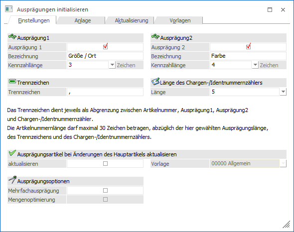
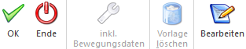

Unter "Ausprägungen" versteht man in WinLine FAKT Artikel, welche in mehreren Varianten / Typen erhältlich sind. Im Programmbereich…
1 WinLine FAKT
1 Stammdaten
1 Ausprägungen
1 Ausprägungen initialisieren
.. können für dieses Arbeiten mit Ausprägungen grundsätzliche Einstellungen vorgenommen werden.
Hinweis
Standardmäßig wird das Fenster für die Register "Einstellungen" und "Anlage" in einem "Lesemodus" geöffnet, d.h. es können die bestehenden Einstellungen kontrolliert, Änderungen allerdings nicht durchgeführt werden. Hierfür muss zunächst mit Hilfe des Buttons "Bearbeiten" der "Bearbeitungsmodus" aktiviert werden.

Das Fenster unterteilt sich hierbei in die folgenden Register, welche in den nachfolgenden Kapiteln beschrieben werden:
ü Register "Einstellungen"
In dem
Register "Einstellungen" können die Grundparameter für das Arbeiten mit
Ausprägungen definiert werden.
ü Register "Anlage"
In dem Register
"Anlage" können die Standard-Stammdatenverweise für neue Ausprägungsartikel
definiert und eine Vorbelegung für die Artikelbezeichnung der Ausprägungsartikel
hinterlegt werden.
ü Register "Aktualisierung"
In dem
Register "Aktualisierung" kann die Artikelbezeichnung von bereits bestehenden
Ausprägungsartikeln geändert werden.
ü Register "Vorlagen"
In dem Register
"Vorlagen" können Vorlagen (d.h. Grundeinstellungen) für das Arbeiten im Fenster
"Ausprägungen erfassen" definiert werden (Unterregister "Anlage"). Des Weiteren
kann hinterlegt werden, welche Vorlage wann genutzt werden soll (Unterregister
"Vorbelegung").
Buttons

Ø Ok
Die Anwahl des Buttons "Ok" bzw. die Taste F5 hat abhängig vom aktivieren Register unterschiedliche Auswirkungen:
ü Register "Einstellungen" und
"Anlage"
Die vorgenommenen Einstellungen werden gespeichert.
ü Register "Aktualisierung"
Die
Artikelbezeichnung der ausgewählten Artikel wird in den Stammdaten (ggfs. auch
in den Bewegungsdaten bei vorheriger Anwahl des Buttons "inkl. Bewegungsdaten")
aktualisiert.
ü Register "Vorlagen"
Die Vorlage
bzw. die Zuordnung der Vorlagen wird gespeichert.
Ø Ende
Durch Drücken des Buttons "Ende" bzw. der Taste ESC wird der Programmbereich geschlossen und nicht gespeicherte Einstellungen verworfen.
Ø inkl. Bewegungsdaten (nur im Register "Aktualisierung")
Bei Aktivierung des Buttons "inkl. Bewegungsdaten" (dieser bleibt gedrückt bis er erneut betätigt wird), wird die Artikelbezeichnung auch in den Belegzeilen, der Dispotabelle, der Statistik und in dem Produktionsjournal aktualisiert.
Ø Vorlage löschen
Durch Anwahl des Buttons "Vorlage löschen" können vorhanden Vorlagen gelöscht werden.
Ø Bearbeiten (nur im Register "Einstellungen" und "Anlage")
Durch Anwahl des Buttons "Bearbeiten" wird vom "Lesemodus" in den "Bearbeitungsmodus" gewechselt.